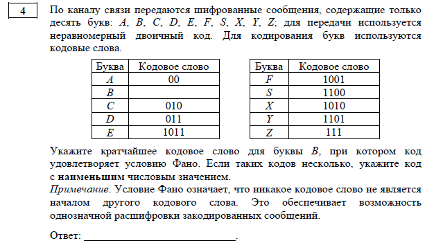

Для решения нам нужно нарисовать дерево фано. Пример дерева Фано:

Алгоритм решения:
- 1. Начинаем рисовать дерево фано и если в таблице есть число как на одной из ветвей дерева, то эта ветвь заканчивается и мы отмечаем её букву.
- 2. Продолжаем рисовать дерево и подписываем подходящие буквы до того момента как известные буквы не закончатся.
- 3. Если буквы, которые мы ищем повторяются несколько раз то мы их пишем на самую короткую свободную ветвь. Если буквы имеют одинаковое количество повторений, то смотря как букв расположены известные буквы(слева направо или наоборот) и выставляем буквы в таком же порядке.
- 4. Ищем что надо найти по заданию и пишем ответ.
Пример из ДЕМО-2025:

- 1. Рисую дерево Фано и отмечаю известные буквы:
- 2. Оставшаяся ветвь является В, в ответ записываю его кодовое слово.
- 3. Ответ: 1000